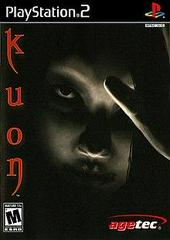
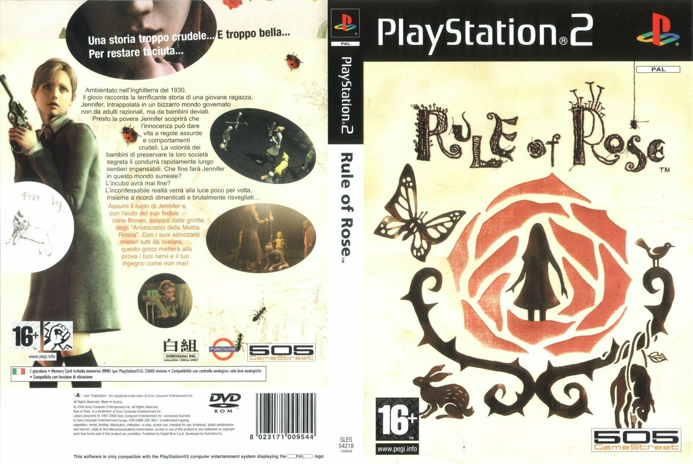
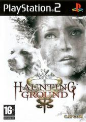

Jogos mais valiosos de Playstation2
Kuon($459.88)

Kuon é baseado em um antigo género da literatura japonesa chamado Kaidan. O jogo passa se em uma escura e grotesca mansão na cidade japonesa de Quioto, onde vivem criaturas mutantes, durante o período Heian do antigo Japão.
Rule of Rose($359.28)

Situando-se em 1930, Rule of Rose segue a história de Jennifer, uma rapariga inglesa de 19 anos, que vê-se obrigada a recordar memórias traumáticas da sua infância, enquanto vivia num orfanato “governado” por crianças, que vieram a estabelecer um sistema hierárquico entre si.
Haunting Ground ($233.50)

A personagem principal é uma jovem que encontra inimigos que a perseguem causando pânico, onde o objetivo é correr e se esconder, enquanto se resolve diversos puzzles e desvendam-se os mistérios.
Para os preços mais atualizados,
clique aqui